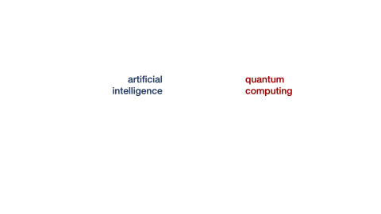
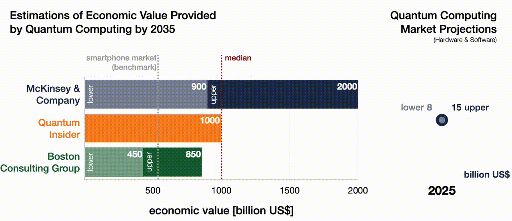

This article was originally published in The Geopolitical Economist.
Introduction
We are living in an era of technological advancements hitherto unseen: artificial intelligence (AI) is installed on almost every smartphone, our data floats in a gigantic virtual cloud, financial assets are stored in novel, digital currencies — and the list goes on and on.
Recently, significant breakthroughs have been made with a technology that will be an absolute game changer — quantum computing.
The first running quantum computer will mark an inflection point as we enter the era of quantum supremacy[1] — an era in which we can calculate problems that were previously beyond reach[2] — just as the invention of the telescope allowed us to observe galaxies we didn't even know existed, or the microscope revealed entire worlds within a drop of water. Used wisely, this technology will help us solve humanity's most pressing problems — as I argued in Part 1 of this article. However, there is a potentially dark side to these developments, as the power of the technology will upset global economic, political, military, and social balances. The unfathomable computational strength of quantum computers will shift geopolitical power towards entities — yes, entities, not necessarily nation states — with access to quantum computing[3]. This will create risks that may be impossible to control, as we'll learn later in this think piece.
We are at an inflection point entering an era of technological supremacy, where entities that lead in innovation and have access to the most advanced technologies will set the rules for the future.
Almost all new tech can be used beneficially or maliciously — think of nuclear technology and the scientists of the Manhattan Project: they debated the implications of the technology they were building long before it was operational. For quantum computing, the same level of proactive ethical foresight is needed — and it is needed right now.
This second part of the article examines emerging risks, explores their geopolitical, social, and economic implications, and assesses how this not-yet-operational technology is already affecting international affairs. Last but not least, we explore what safeguards — if any — we can still put in place to mitigate risks.
Quantum Computing: Power, Peril, and the Coming Symbiosis with AI
Quantum computing won't just be a technological upgrade — it will mark a decisive point: a new era will begin the moment the first operational quantum computer becomes a reality. It will offer computational power beyond anything we can currently comprehend. What we do with that power could shape the fate of our planet — for better or for worse.
Quantum computers could become humanity's ultimate problem-solving engine. They promise breakthroughs in climate modelling, energy system optimisation, and disease prevention — enabling us to unravel some of the most stubborn and complex challenges we face today. Part 1 of this article addressed this in detail.
But there's a darker side to that power. It stems largely from two extraordinary capabilities of quantum computers: quantum decryption and quantum simulation. Each unlocks unprecedented potential — and peril — across multiple domains:
A quantum computer can crack today's encryption with ease, rendering current cryptographic safeguards obsolete. This threatens every sector that relies on secure data — banking, healthcare, communications, and national security. A sufficiently advanced quantum computer could decrypt financial networks or manipulate transactions at will. That is not just a technical failure — it is a recipe for financial panic, collapse of trust, and social upheaval. RAND Corporation analysis →
Quantum computers will be able to model highly complex, multidimensional systems that classical computers simply cannot handle. Quantum simulations could rapidly accelerate discoveries in sensitive fields like biotechnology or nanotech, pushing breakthroughs faster than society can regulate or absorb. Some experts believe these advances could become existential threats — for instance, by enabling the design of autonomous weapons or engineered pathogens before any oversight is possible. The Quantum Insider →
Whoever reaches quantum supremacy first will likely reach quantum dominance soon after. That actor — whether a state or non-state entity — will gain a decisive advantage across science, defence, finance, and global governance. Quantum supremacy might just determine the next global hegemon[4]. An excellent example of such a technological advantage is what happened on the Ukrainian battlefield: Ukrainian forces were able to stop the advance of an attacker who outnumbered them by using intelligence — both open source and foreign — in combination with AI; this combination allowed them to strike the right point at the right time and leave the attackers bewildered[5]. Add the power of a quantum computer to such an approach and the results will be unfathomable; the race for this advantage is on.
Google's recent Willow breakthrough — reducing computation times from 10 septillion years to minutes — has supercharged this global race. Microsoft quickly followed with claims of a new quantum state of matter. At the time of writing (March 2025), Quantinuum reported a breakthrough regarding a hitherto unsolvable mathematical problem, and D-Wave even claimed quantum supremacy[6]. One thing is clear: the pace of discovery is accelerating. This is not a coincidence — AI is now playing a major role in supporting quantum development.

AI and Quantum Computing: A Symbiotic Supercycle — This infographic illustrates the potential feedback loop between artificial intelligence and quantum computing in which each technology accelerates the other, potentially beyond human oversight.
This emerging symbiosis between quantum computing and artificial intelligence illustrates a potential feedback loop in which each technology accelerates the other, potentially beyond human oversight. AI is already supporting quantum computing by assisting its operation and design. Ultimately, this will not remain a one-way street: once quantum computers are fully operational, they will accelerate AI development in return, while providing it with unprecedented computational power — a symbiosis that will lead to an ever-accelerating innovation cycle, one increasingly difficult for humans to govern.
As we approach this threshold, we must be clear-eyed: quantum computing will usher in extraordinary opportunity — but also serious, immediate, and interlinked risks.
Quantum Computing's Severe Risks: Systemic and Interdependent
This technology not only comes with severe risks for both our shared socio-economic system and our very existence, but also with systemic impact. The risks, however, are not posed by the computer itself but by the controlling entity — and the cascades of events that could be triggered if the power of quantum computers is not used responsibly.
These threats are often synergetic, meaning they can amplify one another. The risk scenarios don't occur in isolation — they interact and cascade. For instance, a quantum-enabled attack that decrypts and collapses the financial system would inevitably trigger broader economic crisis, which potentially leads to social upheaval, which would in turn cause a political crisis. Likewise, rapid quantum-driven advances in AI or biotechnology could emerge just as institutions are weakened by economic chaos, making the overall fallout even harder to contain.
In combination, one risk can feed into another, creating a vicious cycle of compounding crises. Not only do quantum computers pose serious risks individually — the mechanisms behind those risks are interdependent and could, through cascade effects, create runaway scenarios that we may not be able to control.
The Quantum Risk Matrix: An interactive overview of the systemic and existential risks posed by quantum computing. Explore by capability, affected sector, or potential outcome — hover over the outer layer to see the cascade and its results; the buttons in the top left corner allow you to explore the main risk categories.
These risks are not theoretical — they are driving geopolitical action in real time. The race to develop the first operable quantum computer is already fuelling a full-blown global technology war, most visibly between the U.S. and China[7]. Quantum supremacy promises dominance not just in computation, but in finance, defence, and data — the pillars of modern power. This has led to geopolitical tensions and an escalating cycle of techno-strategic rivalry. Owing to these high stakes, quantum computing has become the epicentre of a modern Cold War — a full-blown tech race between China and the United States[8]. It is no longer about catching up; it is about who can leap ahead fastest[9].
Technology & Geopolitics: The Quantum Arms Race
Quantum computing is clearly a frontier technology. Building a functional quantum computer requires some of the most fine-tuned physical conditions known to science: near absolute-zero temperatures, ultra-high vacuum environments, and near-perfect isolation — and that is just the hardware. Equally critical are advanced semiconductors and control systems, prerequisites for the sophisticated AI that enables the quantum chip to operate and remain in coherence. The quantum chip requires strategic chemical elements and, rather unsurprisingly, serious financial assets.
Due to the high stakes around quantum computers, governments are investing heavily: nations, unions, and federations around the world are stepping up, funnelling billions into the race for quantum supremacy. Some rely mainly on their private sector and public-private partnerships (PPPs), like the United States; some mainly on centralised investments, as in China; others use a multi-faceted approach like European countries that utilise national and EU-wide investment, research programmes, and start-up support alongside PPPs.
When it comes to the main direct competitors, the US has the advantage of larger private sector investments and a decentralised, highly-collaborative environment of corporates, research institutions, leading universities, and DARPA[10]. This ecosystem is a huge advantage over China's top-down approach.
Global Quantum Investments Heatmap: This heatmap reveals the global race for quantum supremacy, with strategic public investments varying in scale and structure — from China's centralised mega-funding to the U.S.'s public-private innovation ecosystem.
The race for quantum computing is the modern-day analogue to the nuclear arms race of the 20th century — only this time, the battleground is shifting from raw military power and control over land and resources to technological supremacy[11]. Markus Pflitsch, CEO of Terra Quantum and advisor to President Trump, has aptly dubbed this new arena "techno-politics". Yet as we'll see next, control over critical resources remains a decisive factor in this escalating contest.
The battle is not exclusively fought with proactive measures to support quantum computing progress. Next to supporting the development of the technology, players are looking for means to prohibit others from achieving quantum supremacy first — efforts that are key factors in ongoing conflicts and geopolitical tensions we follow through the media without realising their technological dimension.
Breaking the Cycle: Chips on the Global Table
While a plethora of high-tech equipment is necessary to run a quantum computer, the real strategic Achilles heel in this race is the supply of advanced semiconductors. Quantum computers depend on sophisticated control systems, which in turn require the most advanced semiconductors. These semiconductors are produced mainly in countries affiliated with the West, and the West's plan is to achieve quantum supremacy first not only by pushing the technology, but also by prohibiting China access to these chips. Ultimately, it is precisely the symbiosis between AI and quantum computing that rival nations are trying to disrupt.

Breaking the Cycle: The race for technological supremacy is not just about winning — it is also about preventing opponents from catching up.
To prevent China from gaining the upper hand, the US has imposed sweeping trade restrictions, targeting not just Chinese companies but the global semiconductor supply chain. These sanctions aim to slow China's access to high-end chips — and by extension, to the advanced quantum and AI systems that depend on them. Initial sanctions were implemented during the first Trump presidency and tightened several times since. Meanwhile, Japan, Taiwan, the Netherlands, and many other countries have joined this alliance[12].
The sanctions, however, had a fair few unintended consequences — spurring China's domestic endeavours for advanced chip manufacturing, the hoarding of chips and equipment, and the establishment of back-channel supply chains. In addition, the restrictions are hampering innovation by disrupting the global innovation ecosystem; since countries not clearly affiliated with the West are included in export restrictions, innovations from their end are hampered, leading to a slowdown of development[13].

The Semiconductor Squeeze: This animation tracks escalating export restrictions on advanced semiconductors, spearheaded by the U.S. and its allies. These sanctions aim to block China's access to the high-performance chips essential for quantum computing and AI — in an attempt to disrupt the virtuous tech cycle and retain strategic advantage.
The most important and detrimental knock-on effect, however, is the resurgence of an old conflict in East Asia: China's territorial ambitions regarding Taiwan.
The Strait of Taiwan has become a geopolitical flashpoint again: Taiwan's semiconductor foundries — especially TSMC — are among the few capable of producing the chips needed to control next-generation quantum computers. In strategic terms, this makes Taiwan not just a territorial prize, but a technological one — protected, for now, by what is often referred to as the Silicon Shield[14]. Should China lay its hands on Taiwan, the West — led by the United States — would clearly intervene. Taiwan's capabilities in silicon chip manufacturing are thus both attraction and deterrent simultaneously.
The recent developments in the Strait of Taiwan clearly show that both sides are flexing muscles[15]. China is continuing military drills, most recently resembling a blockade of the island, while Western countries are sending naval forces to indicate their likely response[16]. Intelligence services are also on the case: Taiwan's counterintelligence was able to catch four soldiers who were spying for China, and is tracking a large-scale attempt to recruit Taiwanese tech personnel for Chinese endeavours[17].
China's Tit-for-Tat: Critical Mineral Resources
High-tech is a lot about know-how, but not exclusively. Some chemical elements are irreplaceable in the manufacturing of advanced systems — platinum for catalysis, neodymium for state-of-the-art magnets. A group of chemical elements referred to as rare earth metals (REMs) are critical for a range of important tech developments, including electric engines, LED lights, fibre-optic cables, and state-of-the-art magnets.
In defence, REMs are used in satellite communications, guidance systems, and aircraft structures. The U.S. Department of Defense has highlighted the importance of securing a stable supply of these materials, noting their use in critical defence capabilities such as the F-35 Lightning II aircraft and advanced radar systems[18]. REMs are also critical for — quantum chips.
Currently, the main producer of these elements is China, and it did not wait long to use its control over this resource to retaliate against the US export bans[19]. In December 2023, China banned the export of technology related to rare earth magnet production, adding to existing restrictions on extraction and separation technologies. China accounts for nearly 90% of global refined rare earth output[20]. This strategic move underscores the pivotal role REMs play not only in quantum computing but also across a spectrum of high-tech applications, including defence systems[21].
China's export controls on REMs have prompted other nations to seek alternative sources and reduce reliance on Chinese supplies[22]. The European Union has announced strategic projects to increase production of critical materials within member countries as part of ERMA, the European Raw Materials Alliance[23]. Equally, the United States is exploring domestic resources, such as Round Top Mountain in Texas, which hosts significant deposits of heavy rare-earth elements[24].
REMs are concentrated in a few countries, and the lion's share are in countries with a BRICS affiliation — hence the West's access is limited. The global contest for REMs has intensified through the advent of quantum computing, with geopolitical tensions influencing strategic manoeuvres. Two countries that have featured prominently in the media in this context: Ukraine and Greenland.
Geopolitics of Rare Earth Metals: An interactive infographic showing the distribution of REMs by country and geopolitical allegiance.
In the midst of the Ukraine conflict, President Trump demanded compensation from Ukraine for the extensive military aid the US had provided to the attacked country. "Surprisingly", this compensation was to be paid in the form of an agreement on critical minerals, including rare earth metals. Ukrainian President Zelensky was willing to agree on such an arrangement but insisted on tying it to security guarantees for his country, while his US counterpart was reluctant and applying pressure.
President Zelensky has — in my opinion quite rightly — turned Trump's deal down as it did not come with security guarantees; he owes it to the Ukrainian people to make the most of the country's resources and use them as a shield analogous to Taiwan's silicon shield. An indirect safeguard for Ukraine, however, would be American "boots on the ground" in the form of US mining giants exploring resources in Ukraine — I would bet Russia would think twice or thrice about bombing Ukraine if this interfered with US business operations regarding strategic resources.
The tricky part: Ukraine's REM deposits are mainly located in areas currently held by Russia[25], and the American president has initiated parallel talks with the Kremlin regarding resource production[26]. Mr Trump is driving a hard bargain, well realising that he is playing with European security.
Concurrently, Trump has renewed his interest in acquiring Greenland, citing its vast reserves of rare earth elements and its strategic location as vital for U.S. national security. These developments underscore the escalating global scramble for REMs, driven by their indispensable role in high-tech industries and defence applications.
These conflicts and tensions are not predominantly about REMs, but the scramble for these critical resources and technological supremacy is a key factor fuelling them. Moreover, Ukraine's REM reserves are disputed by many, citing that estimates date back to Soviet assessments that are hardly reliable[27]; meanwhile, intelligence services use satellite-based remote sensing and aerial magnetic surveys that seem to tell a different story[28]. We live in a time in which publicly disclosed data is meant to steer rather than to inform.
The above examples show that — behind Trump's bold and populist rhetoric — there are strategic goals aimed at cementing the US's position as a technological and military leader, as well as re-establishing the US as a global economic powerhouse.
The Economic Promise of Quantum Computing
Still, the hype around quantum computing is not just geopolitical — the economics of the technology look compelling too. According to leading consultancies and market analysts, quantum computing could generate between $450 billion and $2 trillion in economic value by 2035. That is not just a futuristic vision — it is a near-term transformation.
Estimates vary widely depending on how quickly the technology matures and how broadly it is adopted. The Boston Consulting Group provides a conservative range of $450–850 billion, while Quantum Insider and McKinsey & Company both project potential impacts approaching or exceeding $1 trillion — larger than the entire global smartphone ecosystem today.

Quantum Computing's Economic Horizon: Graphic exploring different projections for the economic value added by quantum computing (left) and the market size of the quantum computing industry itself.
But these forecasts don't only reflect the growth of hardware and software sales — they account for value creation across sectors: pharma, logistics, finance, energy, materials science, and beyond. Quantum computing won't just launch a new tech vertical — it will upgrade existing ones. In the short term, the market for quantum hardware and software alone is expected to hit $8–15 billion by 2025, underscoring the urgency with which industry leaders are building quantum capacity.
The economic impact will also depend on how the technology — and its symbiosis with AI — is managed by governments. From the risk assessment, it can be clearly seen that we cannot let these technologies "go loose" as there are too many risks involved. Legislators will have to face the difficult balancing act of supporting this innovation while safeguarding the public interest.
Precautions & Safeguards: Can We Stay Ahead of the Curve?
While the quantum arms race accelerates, so too do efforts to mitigate its most dangerous consequences. Governments, research institutions, and industry coalitions are scrambling to future-proof digital systems and strategic infrastructure before quantum capabilities render them obsolete — or dangerously vulnerable[29]. Below are key pillars of this evolving security architecture.
Post-Quantum Cryptography (PQC)
The most urgent safeguard is building encryption that quantum computers cannot break. Known as post-quantum cryptography (PQC), this new class of encryption algorithms is designed to withstand attacks from quantum decryption. The U.S. National Institute of Standards and Technology (NIST) has finalised its first set of PQC standards and published a roadmap for retiring RSA and ECC encryption by 2035 — a shift already echoed by France's phased transition strategy targeting full PQC compliance by 2030. Germany, Canada, and Japan are running parallel efforts to ensure their critical infrastructure and digital assets can survive in a post-quantum world[30].
Quantum Security Guidelines & Crypto-Agility
The ability to adapt encryption systems swiftly — known as crypto-agility — is becoming a regulatory priority[31]. Singapore's Cyber Security Agency (CSA) will roll out national guidelines in 2025 to guide institutions through risk-based assessments, focusing on data value and migration timelines. Meanwhile, frameworks like the EU's Digital Operational Resilience Act (DORA) already require state-of-the-art encryption, nudging institutions toward hybrid cryptographic models that blend classical and quantum-safe algorithms.
National Security Initiatives
Quantum technology is now a tier-one national security issue. Intelligence agencies and military planners are actively assessing how future quantum computers could compromise classified communications, weapons systems, and power grids[32]. National initiatives are being funded at scale to:
- Harden communications infrastructure with quantum-resistant protocols.
- Map vulnerabilities in critical infrastructure under quantum threat models.
- Develop counterintelligence strategies to deter hostile use of quantum capabilities.
Quantum Key Distribution (QKD)
Alongside PQC, Quantum Key Distribution (QKD) is gaining traction as a complementary technology. By using principles of quantum mechanics, QKD allows two parties to establish encryption keys that are theoretically tamper-proof. Organisations are beginning phased QKD deployment — starting with highly sensitive communication networks before expanding to wider IT ecosystems.
Strategic Workforce Development & Supply Chain Resilience
The OECD has flagged two immediate bottlenecks to secure quantum adoption: people and materials. Nations are boosting investment in STEM education, research fellowships, and vocational training to fill the global shortage of quantum-literate engineers and scientists. Meanwhile, policymakers are monitoring dependencies on critical resources like rare earth elements and cryogenic materials to safeguard the quantum hardware supply chain.
Financial Sector Safeguards
Quantum decryption would hit finance first — and hardest. Recognising this, the G7 Cyber Expert Group has issued quantum-readiness guidelines to financial institutions, recommending tailored risk assessments and resilience strategies built around quantum-safe standards. Central banks are now including quantum threats in scenario analyses for systemic risk planning.
Digital Diplomacy & Strategic Alliances
Quantum security is not just a technical challenge — it is a diplomatic one. Nations are beginning to formalise "digital diplomacy" frameworks: cross-border agreements on tech standards, export controls, and joint research initiatives. The EU, U.S., and Japan are leading the charge in forming such alliances, often tied to existing cybersecurity pacts or 6G research partnerships. The Quad Alliance (U.S., India, Australia, Japan) has also discussed quantum as a critical area of cooperation. These initiatives aim not only to set shared guardrails, but also to prevent misuse of dual-use technologies and ensure equitable access.
Transition Timelines & Compliance Frameworks
Migration to quantum-safe systems will not happen overnight. Most roadmaps, such as those from NIST and ANSSI (France's cybersecurity agency), stretch into the 2030s. As critical sectors — finance, telecom, healthcare, automotive — prepare to overhaul their security stacks, governments are establishing transition frameworks to support coordinated compliance and avoid market fragmentation.
Despite encouraging momentum: the cost of implementing quantum-safe infrastructure could be prohibitive for SMEs; the current concentration of quantum talent and infrastructure in a few wealthy nations risks exacerbating global inequalities; and vulnerabilities in rare-earth supply chains could delay hardware deployment in lower-income or geopolitically isolated regions.
As the technology curve steepens, regulators will have to walk a tightrope — balancing innovation and competitiveness on the one hand with national security, individual rights, and global equity on the other. The stakes couldn't be higher: securing the digital world before quantum computers arrive will be one of the most consequential policy challenges of our time.
A Geopolitical Wake-Up Call
Beyond the scramble for tech supremacy, recent developments should serve as a broader wake-up call. The days of near-automatic security guarantees from the United States are waning. US President Trump's quid-pro-quo stance on military aid has made clear that NATO countries must fulfil their commitments, including the long-standing obligation to spend at least 2% of GDP on defence. In Brussels, there is a long-overdue rethink: energy and defence security are climbing back to the top of the agenda. Europe must now take responsibility — not only to defend its nations and Union, but also to preserve peace and order on its own continent. In my view, this can only be achieved through deterrence. Si vis pacem, para bellum.
But this imperative extends far beyond European borders. The international order itself is becoming increasingly unstable. Should Ukraine fall, it would set a precedent that encourages aggression elsewhere. Taiwan, already under pressure, could become the next flashpoint. In a world where technological supremacy determines economic and strategic power, the loss of Taiwan would not just be territorial — it would mark a tectonic shift in tech capabilities and hence in global influence. As shown in this article, the race for quantum computing and AI will determine who sets the rules in defence, trade, communication, and governance. That is why upholding the sovereignty of nations like Ukraine is not just a moral duty — it is a geopolitical necessity.
The international community has to make it clear — once and for all — that borders agreed under international law have to be respected, no matter what.
Moreover, we must recognise that the world has become more fragile over the past years — politically, economically, and environmentally. Technology now acts as both an accelerator and a disruptor. Rapid advances in AI, quantum computing, and biotech can provide power almost overnight. As such, the global balance of power is becoming more fluid than ever. But when power shifts continuously and unpredictably, it becomes harder to establish new equilibriums — and easier for chaos to emerge. That chaos is not abstract: history teaches us that social instability and economic asymmetries often lead to conflict. The roaring 1920s brought enormous economic and technological progress to Europe — but also amplified social inequalities and set the stage for the geopolitical breakdown that followed. We would do well to remember that.
In short, in a world where technology shifts faster than diplomacy or governance, the burden of maintaining peace will fall increasingly on the shoulders of responsible nations. We must be ready to carry it.
Conclusions
Quantum computing is not just another tech wave — it is the tide that may redraw the contours of global power itself.
The actor — be it a state, a corporation, or a coalition — that first builds a scalable, operational quantum computer won't just achieve a leap in processing power; it will gain the strategic upper hand across finance, defence, science, and governance. Technological edge will translate directly into geopolitical dominance.
That is why the race for quantum supremacy is being fought on multiple fronts — from chip embargoes to rare earth mineral deals, from research alliances to export controls, and from using military power to intelligence interventions. It also explains why former President Trump placed quantum computing at the top of his strategic agenda: not just through bold statements and high-level appointments, but by redrawing international alliances around critical technology assets.
But this goes far beyond any one leader or administration. We are witnessing the emergence of a new global order — one no longer defined by borders, oil fields, or military bases, but by who controls the next era of computation.
The question is no longer if quantum computing will arrive. It is when — and more crucially, on whose terms. Will we harness this power to solve our shared global challenges? Or will we allow it to deepen divisions and fuel a new era of techno-political instability?
The inflection point is approaching. The consequences will be profound. But the direction it takes is still — for now — in our hands.